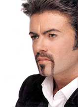

KANJIDAMAGE
Intro
Kanji facts
How to
Tags
Kanji
Radicals
Appendix
Onyomi
Ill pairs
Dupes
Articles
Long short vowlels
Synonyms
Forum
|
← Previous
Number 69
Next →
George Michael's Moustache
(big radical)
PK

QED, chump.
Used In
内
肉
市
亭
夢
索
用
策
刺
奥
央
属
受
愛
浸
侵
写
寝
憂
南
同
両
軍
冗
畳
瞬
円
雨
離
 George Michael's Moustache
George Michael's Moustache
 KANJIDAMAGE
KANJIDAMAGE
 Number
69
Number
69